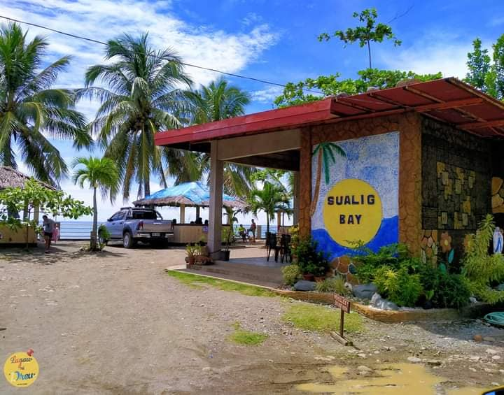

Sualig Bay Resort
Nestled along the idyllic shores of Linaon in Cauayan, Negros Occidental,
Sualig Bay Resort stands as a beacon of luxury and tranquility, inviting travelers
from far and wide to experience the epitome of coastal elegance. As the gentle breeze
whispers through the palm trees and the azure waters of Sualig Bay glisten under
the sun, guests are greeted by a world where time seems to stand still, and worries
fade away. At Sualig Bay Resort, every detail is meticulously crafted to ensure an
unforgettable stay. The accommodations exude opulence, with spacious rooms and suites
adorned with modern amenities and elegant touches inspired by the surrounding natural
beauty. Whether you choose a private villa overlooking the ocean or a cozy room nestled
amidst lush gardens, each space is designed to provide comfort and serenity. Indulge your
senses with exquisite cuisine at the resort's signature restaurant, where local
flavors blend seamlessly with international influences to create culinary masterpieces
that delight even the most discerning palate. For those seeking adventure, Sualig Bay
Resort offers a plethora of activities to satisfy every interest.
Dive into the crystal-clear waters and explore vibrant coral reefs teeming with
marine life, or embark on a thrilling jet ski excursion along the coast. After
a day of exploration, pamper yourself with a visit to the resort's spa, where expert
therapists offer a range of holistic treatments designed to rejuvenate the body, mind,
and soul. As the sun sets over Sualig Bay, gather around a crackling bonfire on
the beach and toast to another day in paradise. With the sound of waves lapping
against the shore and the stars twinkling overhead, moments like these remind
guests that Sualig Bay Resort is not just a destination—it's an experience to be
cherished for a lifetime.

Home |
About |
Amenities |
Contact